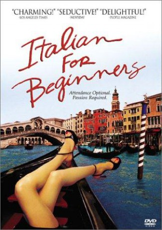
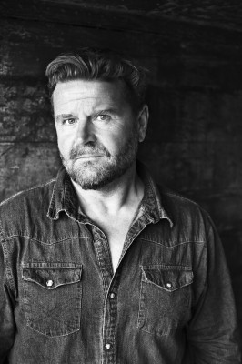

#8620 Italienisch für Anfänger
 
 IMDB-Wertung: 7.1 / 10
IMDB-Wertung: 7.1 / 10  Metascore: 0
Metascore: 0 
A young minister, a widower, is temporarily assigned to a church whose suspended pastor drove parishioners away; he stays at a hotel where he meets Jørgen, who's alone approaching middle age. Jørgen's friend Finn, a temperamental restaurant manager, may be about to be fired. Finn's assistant is Giulia, a lovely young Italian who prays for a husband. Olympia, a clumsy bakery clerk, has an ornery father; Karen, a hairdresser, has a mother who is very ill. The paths of these six characters cross at church, in the restaurant, at the hotel, and at an Italian class at the local adult school. Loneliness, grief, solace, romance, and love may meet 'nel mezzo del cammin di nostra vita.'
Jahr: 2000
Dauer: 107 Minuten
FSK: 6
Land: Dänemark Studio: Kinowelt FilmverleihTonspuren:
Untertitel:
Auflösung: SD (720x576) Größe: 1044 MB
Genre: Drama, Komödie, Liebe
Regisseur: Lone Scherfig
Drehbuch: Maeve Binchy
Soundtrack:
Darsteller:
- Anette Støvelbæk als Olympia
-  Peter Gantzler als Jørgen Mortensen
- Bent Mejding als Reverend Wredmann
 Jesper Christensen als Olympia's Father
Jesper Christensen als Olympia's Father Henning Jensen als Leif (scenes deleted)
Henning Jensen als Leif (scenes deleted)- Anders W. Berthelsen als Andreas
- Ann Eleonora Jørgensen als Karen
- Lars Kaalund als Hal-Finn
- Sara Indrio Jensen als Giulia
- Karen-Lise Mynster als Kirsten, the real estate dealer
- Rikke Wölck als Lise, the nurse
- Elsebeth Steentoft als Kirketjener
- Lene Tiemroth als Karen's Mother
- Claus Gerving als Klaus Graversen
- Merete Voldstedlund als Andreas' mother (scenes deleted)
- Carlo Barsotti als Carlo
- Alex Nyborg Madsen als Sportsman / Church Singer 1
- Steen Svare als Sportsman / Church Singer 2
- Susanne Oldenburg als Lady
- Martin Brygmann als Night School Teacher
- Alexander Noval als
- Matteo Valese als Marcello, the Italian teacher
- Armando Battiston als
- Silvio Zanon als
- Radu Zaplini als
Datei: X:\2000\Italienisch für Anfänger (2000, FSK6, 720x576).mkv seit 25.03.2018
Festplatte: HD 1996-2002
 Es gibt insgesamt 82 Filme in der Gruppe '2000'
Es gibt insgesamt 82 Filme in der Gruppe '2000'